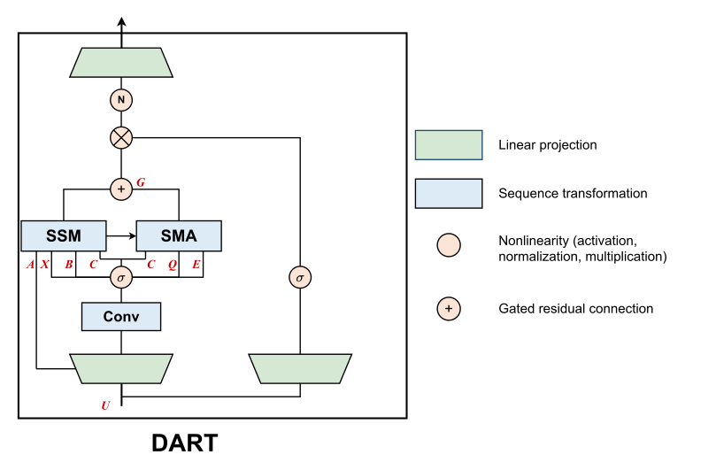

Why it matters왜 중요한가
The interesting claim is not "hybrids work." It is that a recurrent state and an attention cache can be the same tensor, read two different ways.
흥미로운 주장은 "하이브리드가 잘 된다"가 아니다. 순환 상태와 어텐션 캐시가 같은 텐서일 수 있고, 읽는 방식만 두 가지라는 것이다.
Mamba-2's SSD framework already says the SSM state Ht behaves like a compressed associative KV cache, written by Bt and read by Ct. But the reading is one-sided: CtHt pulls out a value, and nothing ever pulls out a key. Without keys you cannot score anything, so there is no query-dependent lookup — the state has to serve every future question through a single fixed readout. That is precisely where recurrent models fail: exact recall, copying, position-structured retrieval. Mamba-2 780M scores 1.4 on NIAH-Single-2 @2048. It is not that the information was compressed away; it is that nothing addresses it.
Mamba-2의 SSD 프레임워크는 이미 SSM 상태 Ht가 압축된 연관 KV 캐시처럼 동작한다고 말한다. Bt가 쓰고 Ct가 읽는다. 그런데 읽기가 한쪽뿐이다. CtHt는 값을 꺼내지만, 키를 꺼내는 경로는 어디에도 없다. 키가 없으면 점수를 매길 수 없고, 그러면 질의 조건부 조회가 불가능하다. 상태 하나가 고정된 읽기 경로 하나로 미래의 모든 질문에 답해야 한다. 순환 모델이 정확한 회상·복사·위치 구조 검색에서 무너지는 지점이 정확히 여기다. Mamba-2 780M의 NIAH-Single-2 @2048 점수는 1.4다. 정보가 압축되어 사라졌다기보다, 그것을 주소로 지목할 수단이 없는 것이다.
Existing hybrids (Jamba, Zamba) answer this by interleaving whole attention layers between recurrent ones — two separate memories, one token-level and growing, one compact and fixed. DART's answer is a memory-level hybrid instead of a layer-level one: attention stays inside the recurrent block and operates on the compressed memories the scan produces. That is what buys the cache reduction — it is not sparsity, not a sliding window, not an approximation of full attention. It is full softmax attention over a shorter list.
기존 하이브리드(Jamba, Zamba)는 순환 레이어 사이에 어텐션 레이어를 통째로 끼워 넣어 답했다. 토큰 단위로 계속 자라는 메모리와 작고 고정된 메모리, 두 개의 별도 기억이 생긴다. DART의 답은 레이어 단위가 아니라 메모리 단위 하이브리드다. 어텐션은 순환 블록 안에 머물면서 스캔이 만들어낸 압축 메모리 위에서 동작한다. 캐시 절감은 여기서 나온다. 희소성도, 슬라이딩 윈도우도, 풀 어텐션의 근사도 아니다. 더 짧아진 목록 위의 완전한 소프트맥스 어텐션이다.

By the numbers핵심 숫자
Retrieval: the win, and the ceiling검색 성능: 성과, 그리고 천장
| Model | SWDE | FDA | NIAH-S2 @2048 | NIAH-S3 @2048 |
|---|---|---|---|---|
| Mamba-2 780M | 39.9 | 17.2 | 24.6 | 19.4 |
| DART 795M (S=256) | 56.5 | 28.9 | 70.0 | 43.4 |
| DART 795M (S=64) | 63.7 | 41.4 | 90.6 | 80.6 |
| Pythia 1B (full attn) | 68.7 | 66.6 | 99.8 | 97.0 |
In one diagram한 장의 그림
The idea, in three moves아이디어, 세 단계
Values are decoded, keys are not
SSD says Ht is a compressed KV cache. Mamba-2 reads it with CtHt, which produces a value. There is no operator anywhere in Mamba-2 that produces a key from the state — so the state can be read, but never searched.
SSD는 Ht가 압축된 KV 캐시라고 말한다. Mamba-2는 이를 CtHt로 읽고, 그 결과는 값이다. Mamba-2 어디에도 상태로부터 키를 만들어내는 연산자는 없다. 그래서 상태는 읽을 수는 있어도 검색할 수는 없다.
Chunk state memories cost nothing to make
The Mamba-2 chunked scan already computes a per-chunk contribution ΔH[c] ∈ ℝN×P on its way to the boundary state, then throws it away. DART simply retains them. No extra scan, no extra pass — the memories are a by-product that was being discarded.
Mamba-2의 청크 스캔은 경계 상태로 가는 길에 이미 청크별 기여분 ΔH[c] ∈ ℝN×P를 계산하고, 그 뒤 버린다. DART는 그것을 그냥 보관할 뿐이다. 추가 스캔도, 추가 패스도 없다. 이 메모리는 버려지고 있던 부산물이다.
State-Memory Attention over chunks
Per token, three projections: a query Qt, a key-decoder Et, and the shared read vector Ct. From each chunk memory decode a value CtΔH[c] and a key (ΔH[c]Et)⊤, softmax the logits over chunks, and add the weighted sum back through a zero-initialised gate.
토큰마다 세 개의 투영을 만든다. 질의 Qt, 키 디코더 Et, 그리고 공유되는 읽기 벡터 Ct. 각 청크 메모리에서 값 CtΔH[c]와 키 (ΔH[c]Et)⊤를 디코딩하고, 청크들에 대해 로짓을 소프트맥스한 뒤, 가중합을 0으로 초기화된 게이트를 통해 되돌려 더한다.
How it works어떻게 작동하나
- Run the ordinary Mamba-2 chunked scan, but keep the scraps.평범한 Mamba-2 청크 스캔을 돌리되, 부스러기를 버리지 않는다. The sequence is cut into chunks of size S; each chunk's contribution to the boundary state, ΔH[c] ∈ ℝN×P, is retained as a "chunk state memory". A length-L sequence yields M = L/S of them. 시퀀스를 크기 S의 청크로 자르고, 각 청크가 경계 상태에 기여한 몫 ΔH[c] ∈ ℝN×P를 "청크 상태 메모리"로 보관한다. 길이 L 시퀀스에서 M = L/S 개가 나온다.
- Project each token into three vectors — one of them borrowed.각 토큰을 세 벡터로 투영한다 — 그중 하나는 빌려 쓴다. Qt = UtWQ lives in the SSD key-side space and routes among chunks; Et = (UtWE)⊤ is a dedicated key decoder; Ct is not new — it is Mamba-2's own read vector, reused. Qt = UtWQ는 SSD의 키 쪽 공간에 놓여 청크 사이를 라우팅하고, Et = (UtWE)⊤는 전용 키 디코더이며, Ct는 새로 만든 것이 아니다. Mamba-2 자신의 읽기 벡터를 그대로 재사용한다.
- Decode a key–value pair out of every past chunk.지나간 모든 청크에서 키–값 쌍을 디코딩한다. For chunk c < c(t): value Vt,c = CtΔH[c], key Kt,c = (ΔH[c]Et)⊤. Both are token-conditioned, so the same chunk yields different KV pairs for different queries — which is what a fixed readout could never do. 청크 c < c(t)에 대해 값 Vt,c = CtΔH[c], 키 Kt,c = (ΔH[c]Et)⊤. 둘 다 토큰 조건부이므로 같은 청크라도 질의가 다르면 다른 KV 쌍이 나온다. 고정된 읽기 경로로는 결코 할 수 없던 일이다.
- Attend over chunks, then merge as a gated correction.청크 위에서 어텐션하고, 게이트 보정으로 합류시킨다. ℓt,c = QtKt,c/√N, softmax over c, Rt = Σ gt,cVt,c. Output is Yt = CtHt + GtRt with Gt = SiLU(UtWG) initialised at zero, so the model starts life as exact Mamba-2 and learns the correction. ℓt,c = QtKt,c/√N를 c에 대해 소프트맥스하고 Rt = Σ gt,cVt,c. 출력은 Yt = CtHt + GtRt이며 Gt = SiLU(UtWG)는 0에서 시작한다. 모델은 정확히 Mamba-2로 출발해 보정항을 학습한다.
- Make it affordable with a FlashAttention-style kernel.FlashAttention 스타일 커널로 감당 가능하게 만든다. Keys, values and logits are computed on-chip while streaming over chunks, softmax statistics update online, and the backward pass recomputes rather than stores. Training cost is O(L²NP/S) — a factor N/S below token-level attention's O(L²P), so it pays off whenever N < S. 청크를 스트리밍하며 키·값·로짓을 온칩에서 계산하고, 소프트맥스 통계를 온라인으로 갱신하며, 역전파는 저장 대신 재계산한다. 학습 비용은 O(L²NP/S)로 토큰 단위 어텐션의 O(L²P)보다 N/S배 작다. 즉 N < S일 때 이득이다.
What to take away그래서, 가져갈 것
The retrieval gains are unambiguously caused by SMA, not by extra parameters. Ablating only the residual readout at evaluation time — same checkpoint, same weights — drops SWDE from 34.9 to 4.2 and MQAR from 96.70% to 12.40%. That is about as clean a causal attribution as an architecture paper gets.
검색 성능 향상의 원인이 파라미터 증가가 아니라 SMA라는 점은 분명하다. 평가 시점에 잔차 읽기만 제거하면 — 같은 체크포인트, 같은 가중치인데 — SWDE는 34.9에서 4.2로, MQAR은 96.70%에서 12.40%로 떨어진다. 아키텍처 논문이 얻을 수 있는 인과 귀속 중 가장 깔끔한 축에 속한다.
Sharing Ct is load-bearing, not a parameter-saving trick. Give SMA its own independently parameterised read vector and MQAR accuracy is 0.00% at every width tested. The two readouts have to agree on what the state means; a second, free-floating decoder never finds that agreement.
Ct 공유는 파라미터를 아끼려는 잔기술이 아니라 구조를 떠받치는 요소다. SMA에 독립적으로 파라미터화된 읽기 벡터를 주면 시험한 모든 폭에서 MQAR 정확도가 0.00%다. 두 읽기 경로는 상태의 의미에 대해 합의해야 한다. 따로 떠 있는 두 번째 디코더는 그 합의에 끝내 도달하지 못한다.
Scale erodes the story rather than confirming it. Downstream average gain goes +0.99 → +0.42 → +0.65 across 130M/370M/780M, and at 780M DART is actually behind on Pile PPL (9.20 vs 9.19). Nothing here is trained past 780M or 100B tokens, so the honest read is "promising at small scale", not "solved".
규모를 키울수록 이야기는 확증되기보다 흐려진다. 다운스트림 평균 향상은 130M/370M/780M에서 +0.99 → +0.42 → +0.65로 움직이고, 780M에서는 Pile PPL이 오히려 뒤진다(9.20 대 9.19). 780M·100B 토큰을 넘어선 학습은 없다. 정직한 독해는 "해결됐다"가 아니라 "작은 규모에서 유망하다"이다.